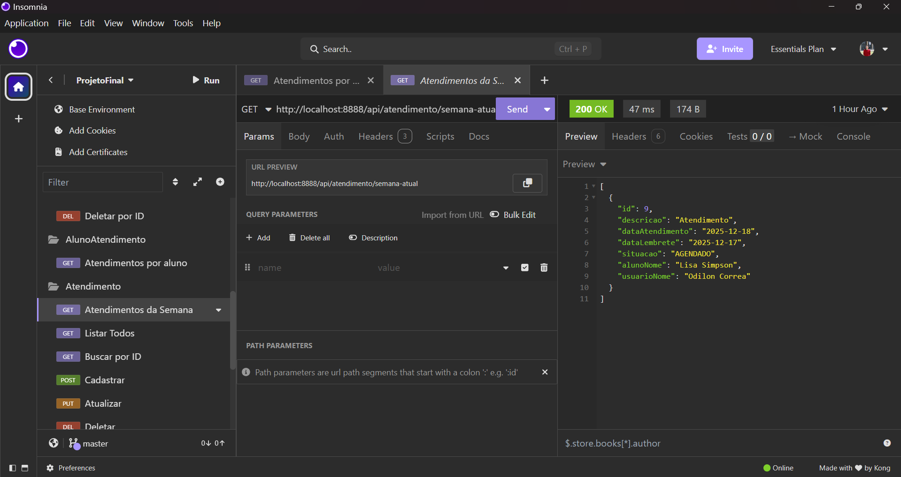

O data escola surgiu para facilitar a vida de gestores e servidores. Assim, pensamos que devíamos facilitar o trabalho de correção deste projeto também! A seguir estão listados os critérios de avaliação e onde você os encontra!
Os testes de requisição da API estão prontos na pasta geral do projeto. Basta abrir o documento: testes_DataEscola_Insomnia.yaml"
Todas as classes foram criadas e estão com suas requisições básicas criadas. Estão criadas também as requisições que envolvem mais de uma tabela, como Atendimentos por Semana ou Atendimentos por Aluno
Criamos nossa própria logo, personalizamos nosso site e até adicionamos um favicon - ícone que aparece nas abas. Além disso, fique à vontade para testar o site em diferentes telas, pois a interface está responsiva.
📌Registro e autenticação de usuário: pode tentar se cadastrar. O link para cadastro está na página de login.
📌Registro de aluno: ao fazer login, você encontra a opção de cadastrar aluno no painel geral.
📌Registro de atendimento: também no painel geral essa opção está disponível.
📌Registro de atividade acadêmica: também no painel geral essa opção está disponível
📌Dashboard com avisos ou gráficos: no painel da semana, você encontra uma tabela que filtra os atendimentos próximos
Agradecemos ❤️